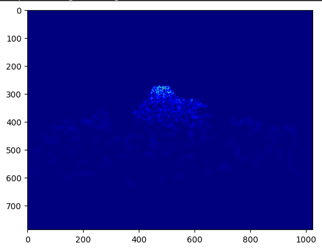
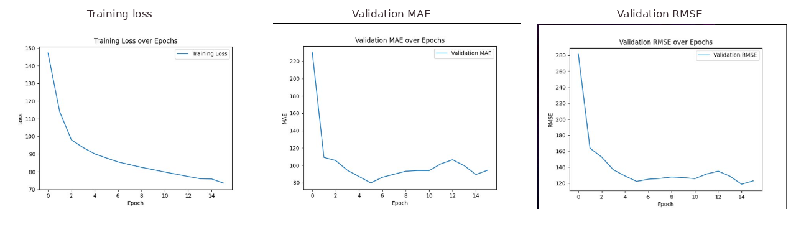
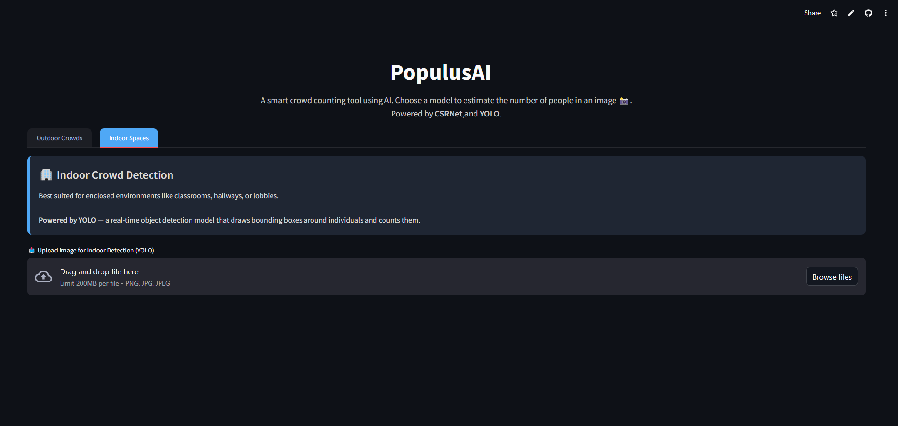

AI Applications / 2025 · University Group Project
Crowd Engagement Analysis
Developing a computer vision approach to crowd-count estimation for Bradford 2025 City of Culture events. Our team explored deep learning methods for dense and sparse crowds and built a Streamlit prototype to make the predictions accessible to non-technical users.
My focus: CSRNet development, image annotation, testing and project management.
2 approaches
Density-map estimation and person detection
MAE + RMSE
Crowd-count error metrics explored
Streamlit
Interactive image-analysis prototype
01 / The Problem
Counting people at public events is difficult when crowds are dense, individuals overlap, and camera views vary. Manual counting is time-consuming, while conventional object detection can miss people in heavily occluded scenes.
The project investigated whether automated crowd counting could help organisers assess attendance across different event settings. Crowd size is an indicator of attendance, not a direct measure of audience engagement or satisfaction.
02 / My Approach
We began with event imagery supplied for the project, but the initial images were limited in quantity and variety. We therefore explored established crowd-counting datasets, including ShanghaiTech, JHU-Crowd and UCF-QNRF, to support experimentation across different crowd densities and environments.
- Annotation and data preparation: Used Label Studio to create point-based head annotations for crowd images. These annotations supported the generation of Gaussian density maps used to train the CSRNet crowd-counting model. Point annotations were particularly useful for densely populated scenes where individuals overlap.
- CSRNet development (my contribution): Worked on a density-regression model with a pretrained VGG-16 feature extractor and dilated convolutions. The predicted density map is summed to estimate the number of people in an image.
- Alternative approach (team): Explored YOLOv8 object detection, which counts people using bounding boxes and is more appropriate when individuals are clearly visible.
- Model evaluation: Tracked training loss and validation mean absolute error (MAE) and root mean squared error (RMSE), alongside visual checks of model predictions.
- Prototype integration: Combined the models in a Streamlit interface with image upload, estimated counts, density maps or detection boxes, and downloadable outputs.
CSRNet Density Map Prediction
CSRNet estimates crowd size by generating a density map rather than detecting each person individually with bounding boxes. Brighter regions represent higher predicted crowd density, and the overall crowd count is obtained by summing the density values across the image.

03 / Evaluation & Findings
We used MAE to measure average absolute crowd-count error and RMSE to give greater weight to larger mistakes. These metrics helped us assess whether a model produced reliable count estimates, rather than judging predictions only by how convincing the visual output looked.

In our qualitative evaluation, CSRNet was more suitable for highly congested scenes, where density maps could represent overlapping people. YOLOv8 was more effective in less crowded scenes, where individuals could be identified with bounding boxes.
The trade-off was important: CSRNet sometimes overestimated sparse crowds, while YOLOv8 could undercount when many people overlapped. This reinforced the need to select a model based on the operating environment rather than assuming one approach would work everywhere.
04 / Prototype & My Contribution
The team developed PopulusAI, a Streamlit prototype with separate workflows for dense outdoor scenes and less crowded indoor spaces.
Users could upload an image, view an estimated crowd count alongside the model output, and download the visualisation. Model caching was used to avoid reloading weights on every request.

My Individual Contributions
- Developed the CSRNet crowd-density experiment and contributed to image annotation.
- Prepared CSRNet test plans and implemented unit and integration tests.
- Produced technical documentation, diagrams and evaluation material.
- Served as Project Manager: coordinated tasks, deadlines and progress using Jira, GitHub branches and pull requests.
The wider team worked on additional model experiments and the integrated application. Separating these contributions reflects the collaborative nature of the project.
05 / Reflection & Limitations
This project strengthened my skills in computer vision, CNN-based density estimation, model evaluation and Python application development. It also gave me experience taking an AI idea beyond a notebook and considering usability, testing and deployment.
The original prototype still had practical limitations: large image uploads could cause crashes, initial model loading was slow, and predictions could take around seven seconds depending on image size. Performance also varied with density and occlusion.
Given more time, I would test performance across clearly defined crowd-density ranges, report MAE and RMSE on a consistent held-out dataset, improve handling of large uploads and monitor inference latency. Any use of event images would also require appropriate privacy and data-permission safeguards.
06 / Explore the Project
This case study summarises the implementation and findings of our 2025 university group project. The repository is provided for readers who want to explore the code and project structure.